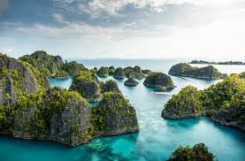

| Destination |
Description |
Image |
More Info |
| Bali |
Bali adalah pulau paling terkenal di Indonesia, sering disebut sebagai "Pulau Dewata." Bali dikenal karena keindahan alamnya, termasuk pantai berpasir putih, terasering sawah, gunung berapi, dan hutan tropis. Selain alam, Bali juga memiliki budaya yang kaya dengan banyak upacara Hindu, tari-tarian tradisional, dan seni lokal.
|
 |
Explore Bali |
| Raja Ampat |
Raja Ampat adalah kepulauan di Papua Barat, Indonesia, yang terkenal karena kekayaan bawah lautnya. Raja Ampat dianggap sebagai salah satu tempat menyelam terbaik di dunia dengan biodiversitas laut yang sangat tinggi. Kepulauan ini terdiri dari lebih dari 1.500 pulau kecil, teluk, dan pasir putih yang memukau.
|
 |
Discover Raja Ampat |
| Borobudur |
Candi Borobudur adalah salah satu candi Buddha terbesar di dunia dan merupakan Situs Warisan Dunia UNESCO. Terletak di Magelang, Jawa Tengah, Borobudur dibangun pada abad ke-8 dan 9 selama masa Dinasti Syailendra. Candi ini memiliki arsitektur yang mengesankan dengan relief batu yang menggambarkan kehidupan Buddha dan filosofi Buddha.
|
 |
Visit Borobudur |
| Pulau Komodo |
Pulau Komodo adalah salah satu destinasi wisata paling unik di Indonesia, terletak di Kepulauan Nusa Tenggara, tepatnya di Provinsi Nusa Tenggara Timur. Pulau ini terkenal sebagai habitat asli Komodo, spesies kadal terbesar di dunia yang hanya ditemukan di daerah ini. |
 |
Discover pulau komodo |